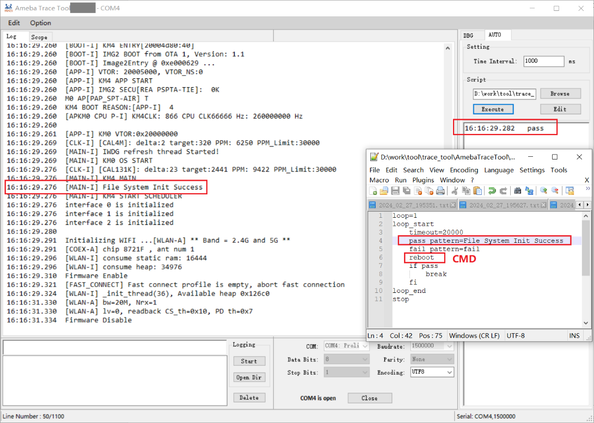

Trace Tool
概述
Trace Tool 是 Realtek 官方开发的串口调试工具。它可以通过标准的 RS-232 端口与设备进行通信。 您可以直接在终端中输入命令，并通过 Trace Tool 实时查看或记录日志。
本章将介绍如何使用 Trace Tool 打印日志和发送命令。Trace Tool 的用户界面如下图所示。
Trace tool 用户界面
左上角两个选项卡：
Edit: 用于清除历史日志、清除历史命令、加载和保存操作。Option: Global Settings包括行数和时间戳设置。Option: Tag Filter用于在当loguart 的 AGG 功能 启用时,在日志前附加不同的标签。
环境设置
硬件设置
硬件连接如下图所示。
备注
如果使用外部 UART 下载固件，则必须使用 USB 转 UART 转换器。
软件设置
环境要求：
Windows XP 及以上版本
.NET Framework 4.0
软件位置：
{SDK}/tools/ameba/TraceTool/AmebaTraceTool.exe
备注
请先在主机安装板上 USB 转 UART 适配器（例如 PL2303GC）的驱动程序，否则主机无法识别 LOGUART 端口。 请从对应 USB 转 UART 适配器供应商的官方网站下载相应的驱动程序。
使用方法
日志打印
在按照 环境设置 部分设置好环境后，执行以下步骤：
选择COM端口。
设置参数。
波特率 : 默认值为1500000bps。
数据位 : 默认值为8。
校验位 : 默认值为“无”。
停止位 : 默认值为1。
编码 : 默认值为UTF8。
这些设置不应随意更改。如果用户因某些原因必须更改参数设置，则需要相应地更改loguart参数，以确保loguart的参数与Trace Tool的参数匹配。
点击 Option 按钮，然后选择 Global Settings 以选择是否添加时间戳。
请注意，时间戳并不十分准确，因为日志处理需要时间，因此在接收日志和显示日志之间存在轻微的时间间隔。
当COM端口打开时，Trace Tool开始从设备接收日志。日志显示在日志窗口中。默认情况下，时间戳会插入到每条日志的开头。
如果COM端口关闭，Trace Tool将不会显示日志，并且无法发送命令。

Trace Tool 时间戳

Trace Tool支持日志保存功能。
点击 Logging 框中的 Start 按钮后，所有接收到的日志都可以保存到与
.exe文件同目录的日志文件夹中的.txt文件中。备注
对于分段日志，点击 Option 和 Global Settings 来设置日志大小。
点击 Logging 框中的 Open Dir 按钮后，可以直接打开保存日志的文件夹。
Trace Tool可以在loguart的AGG功能启用或禁用时打印日志，因为Trace Tool可以自动检测AGG功能是否启用，并相应地处理。当AGG功能启用时，点击 Option 按钮并选择 Tag Filter，来自不同核心的日志将添加相应的标签。 当AGG功能从启用切换到禁用或从禁用切换到启用时，可能会出现一段时间的日志混乱。
命令发送
命令发送的步骤如下：

{kind=link}
{kind=link}
{kind=link}
{kind=link}
{kind=link}
历史命令框记录了之前发送过的命令。
点击命令，它将会显示在命令框中。
双击命令，它将会发送到芯片。
点击命令然后点击 Delete，该命令将从历史命令框中删除。
命令前缀
各个芯片的各个核扮演不同角色时，对应需要添加的命令前缀如下：
核 |
角色 |
命令前缀 |
|---|---|---|
KM4 |
AP |
无 |
KM0 |
NP |
@ |
核 |
角色 |
命令前缀 |
|---|---|---|
KM4 |
NP |
@ |
KR4 |
AP |
无 |
核 |
角色 |
命令前缀 |
|---|---|---|
KM4 |
AP |
无 |
KR4 |
NP |
@ |
核 |
角色 |
命令前缀 |
|---|---|---|
DSP |
算法 |
~ |
KM4 |
NP |
@ |
KR4 |
AP |
无 |
核 |
角色 |
命令前缀 |
|---|---|---|
DSP |
算法 |
~ |
KM4 |
AP |
无 |
KR4 |
NP |
@ |
核 |
角色 |
命令前缀 |
|---|---|---|
CA32 |
AP |
无 |
KM4 |
NP |
~ |
KM0 |
Firmware |
@ |
调试
寄存器访问
寄存器访问功能用于通过寄存器地址读取和写入寄存器值。
Type: 用于选择寄存器类型。Wifi MAC/Wifi BB/Wifi RF选项用于Wi-Fi功能，它们具有不同的基地址。请根据您的需求选择相应的选项。Read/Write Register: 输入寄存器地址以Read或者Write寄存器值。Dump仅支持Wifi MAC/Wifi BB/Wifi RF寄存器的批量打印。Bit Value: 按位访问由地址指定的寄存器。
Trace Tool 寄存器访问
示波器
示波器功能用于捕获日志中的特定数据并动态展示波形。此功能自版本v2.1.28起开始支持。
输入 X 和 Y 模式， X 的默认值为时间。
点击 Start 按钮。

Trace Tool 示波器设置
在示波器界面中，波形将同步展示。

Trace Tool 示波器波形
WiFi 调试
DIG_MARGIN: 设置WiFi DIG余量，可用地址：[0x00,0x3c]。EDCCA: 设置MAC EDCCA模式，可用值：0/1/9。DBG: 设置Wi-Fi RA调试，可用地址：[0,0xff]，并展示 CCK_FA 和 OFDM_FA 的平均值。Power Save: 启用或禁用Wi-Fi省电模式。

Trace Tool WiFi 调试
自动化脚本
使用方法
AUTO功能用于自动执行脚本。
点击
Browse按钮选择要执行的脚本。点击
Execute按钮以执行脚本。
{kind=link}
Trace Tool AUTO 功能
脚本格式
用于自动模式的 script.txt 文件格式如下：
CMD1
CMD2
CMD3
…
如果需要重复执行命令多次，可以使用循环：
loop=10 loop_start CMD1 CMD2 sleep 1000 … loop_end
循环中的关键词和具体的规则如下：
Loop:loop=后面的数字表示循环次数。
loop_start: 用于标记循环的开始。
loop_end: 用于标记循环的结束。
loop_start和loop_end必须成对出现。
sleep: 用于在命令之间延迟一段时间，单位为毫秒。sleep 1000表示延迟 1000 毫秒。sleep和延迟时间之间需要有一个空格。
支持嵌套循环，如下所示：
loop=2 loop_start CMD1 sleep 1000 loop=3 loop_start CMD2 sleep 2000 loop_end loop_end
支持捕获特定模式（如 pass_pattern 或 fail_pattern）以指示特定 CMD 执行的结果，格式如下：
loop=10 loop_start timeout=1000 pass_pattern=xxx fail_patern=xxx CMD1 if fail/pass/timeout break fi CMD2 … loop_end
关键词
pass_pattern，fail_pattern和timeout仅对下一个命令 CMD1 有效，用于捕获 CMD1 执行中的模式。当捕获到模式时，可以使用关键词
if...fi执行后续操作，目前仅支持break操作，用于跳出循环。 Trace Tool 执行自动脚本
timeout=后面的数字表示获取匹配字符的等待时间，超出该时间即停止获取。可以根据需要设置为不同的值（单位：毫秒），默认值为 5000。pass_pattern=后面的字符串表示 pass_pattern，fail_pattern=表示 fail_pattern, 用于指示 CMD 执行的结果。
当 CMD 执行期间，会有如下三种结果：
Pass: 在 CMD 执行结果中， pass_pattern 在超时时间内匹配。Fail: 在 CMD 执行结果中， fail_pattern 在超时时间内匹配。Timeout: 在 CMD 执行结果中，超时时间内未匹配到 pass_pattern/fail_pattern 。
{kind=link}
小心
每行只能有一条命令。
使用 TAB 缩进一行。只能使用 TAB，不允许使用空格。
=前后不允许有空格。
AGG 功能
当loguart 的 AGG 功能启用时，Trace Tool 支持通过选择 Option: Tag Filter 在日志前附加不同的标签，以便在启用 AGG 功能时区分来自不同核的日志。
启用和禁用 AGG 功能时，Trace Tool的具体区别如下：
当启用 AGG 功能时，每个数据包都会通过 UART Tx 模块发送，硬件会自动附加 AGG 头部信息。Trace Tool 可以根据 AGG 头部信息区分来自分来自不同核心的多路数据。
AGG 功能用于同时从多个路径打印日志，这些路径包括 KM0、KM4、BT 跟踪日志和 BT 固件日志。
AGG 功能用于同时从多个路径打印日志，这些路径包括 KM4、KR4、BT 跟踪日志和 BT 固件日志。
AGG 功能用于同时从多个路径打印日志，这些路径包括 KM4、KR4、DSP、BT 跟踪日志和 BT 固件日志。
AGG 功能用于同时从多个路径打印日志，这些路径包括 KM0、KM4、CA32、BT 跟踪日志和 BT 固件日志。
在这种情况下，来自 BT 跟踪和 BT 固件的日志会分别保存到文件中，而其他日志则会直接打印在屏幕上。 因此，用户必须使用 Trace Tool 而不是其他串口工具，因为其他工具可能会打印出混乱的日志。
当禁用 AGG 功能时，不会附加 AGG 头部信息。
在这种情况下，只要没有 BT 跟踪和 BT 固件日志，用户可以使用其他工具来打印日志。默认情况下，loguart 的 AGG 功能是禁用的。
但是，当多个 CPU 同时打印日志时，可能会出现日志混乱的情况。
备注
可以通过在 ameba_bootcfg.c 文件中把 Boot_Agg_En 设置为 TRUE 来启用 AGG 功能。